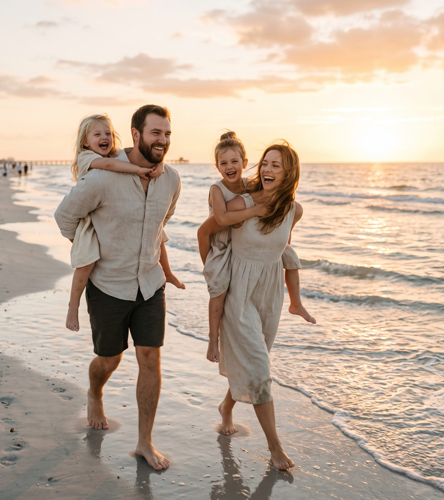
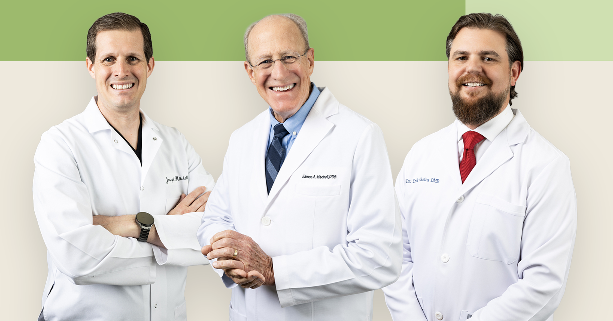
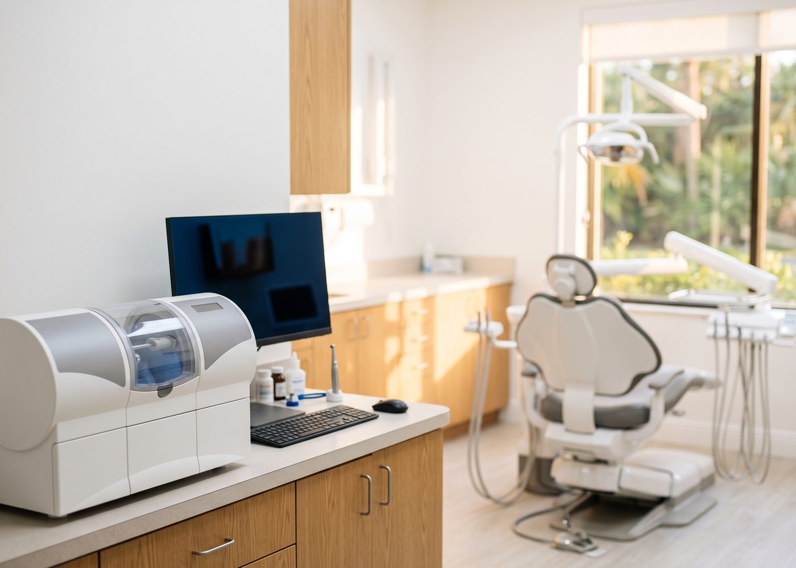
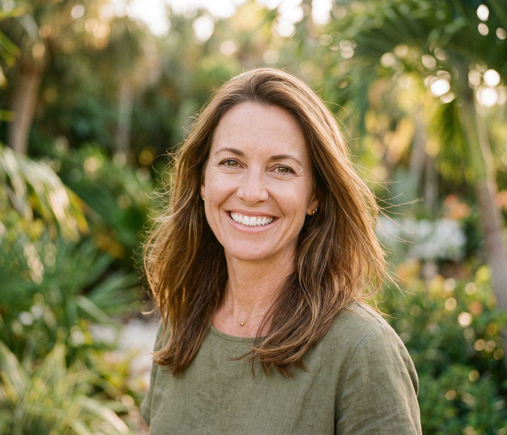

A Fort Myers Dentist
Mitchell Dentistry is a family-owned dental practice serving Fort Myers and Sanibel Island since 1980.
Under Dr. Joe Mitchell, his father Dr. James Mitchell, and Dr. Erik Skates, we've spent 45+ years treating patients like people, not chart numbers. From routine cleanings to same-day CEREC crowns and dental implants, every visit is unhurried, personal, and built around you.
Schedule an Appointment
At Mitchell Dentistry, you're never just the next appointment on the schedule.
Founded in 1980 and still family-owned today, our practice was built on a simple idea: get to know the patient in the chair, then find the technology to serve them better, not the other way around.
It's why patients tell us, again and again, that we're thorough, conscientious, and caring. And it's why so many who left for a bigger, faster practice eventually find their way back.
Learn More About Our Practice
Dr. Joe Mitchell leads Mitchell Dentistry with the same philosophy his family has practiced for over four decades: improve the patient experience first, then find the technology to achieve it.
A member of the American Academy of Cosmetic Dentistry, Joe brings an exacting eye to everything from a single crown to a full smile makeover.
Learn MoreThe Mitchell in Mitchell Dentistry since 1980, Dr. James Mitchell, founded the practice on the belief that good dentistry starts with genuinely knowing your patients.
Now semi-retired, he's in the office on Tuesdays, continuing the same unhurried, relationship-first care that's defined the practice, and his son's approach to it for over 45 years.
Learn MoreDr. Eric Skates brings the same patient first standard to every appointment on his schedule, from routine exams to same-day emergency visits.
New and existing patients alike are welcome to book with Dr. Skates for the same thorough, unrushed care Mitchell Dentistry has been known for since 1980.
Learn MoreGreat dental health starts with the basics, done right and never rushed.
Our general dentistry visits include comprehensive exams, cleanings, digital X-rays, and periodontal therapy, all with an eye toward catching small issues before they become even bigger problems.
We use tools like intraoral cameras and CariVu caries detection so you can actually see what we see and buffered local anesthetic to keep visits as comfortable as possible.
General DentistryMissing teeth shouldn't mean missing out.
Our implant patients get guided, digitally planned surgery, implants restored right here in our office, and options ranging from a single implant-retained crown to full-arch solutions like All-on-4 and All-on-6.
With CBCT imaging and an in-house lab, we can move through treatment with more precision and fewer outside referrals along the way.
Dental ImplantsMost crowns here are same-day. Our CEREC technology means no temporary crown, no second appointment, and no goopy impressions. Patients who remember getting a crown the old way are usually surprised how different it is now. It's one piece of a broader restorative lineup that includes bridges, dentures, partials, and full-mouth restoration, with roughly 90% of our lab work done in-house for a faster turnaround.
Explore Restorative Dentistry

Cosmetic work here is built around looking like you, just with fewer flaws, not a different person. Dr. Joe's AACD membership reflects that level of attention, whether the case is porcelain veneers, composite bonding, a full smile makeover, or Zoom! whitening. We also use digital smile design, so you can see a preview of the result before any work starts.
Explore Cosmetic DentistryDental emergencies don't happen on a schedule, so we keep same-day slots open for both patients we've never seen before and patients we've seen for years. That covers a same-day crown, an extraction, or just getting you out of pain fast. Call and you'll get an actual person on the phone.
Call Now for a Dental EmergencyWe're not chasing the latest equipment for its own sake. Each piece earns its place by making care faster, more accurate, or more comfortable. That's the reasoning behind our in-house CEREC milling, the Sirona Orthophos CBCT scanner, digital smile design software, and digital impression scanners that replace the old goopy molds. About 90% of our lab work never leaves the building, which is most of why turnaround is as fast as it is.
Mitchell Dentistry covers care for every member of the family, from a first cleaning to a full smile transformation, all under one roof.
Our general dentistry visits combine digital X-rays, oral cancer screenings, and periodontal therapy, routine enough that we catch problems early before they turn into bigger, more expensive ones.
Learn MoreDental care for kids, parents, and retirees: the whole family sees the same dentist, in the same office, instead of bouncing between offices by generation.
Learn MoreSame-day help for tooth pain, a broken tooth, a lost crown, or any urgent dental need, for new and existing patients alike.
Learn MoreGuided implant surgery, implant restorations, implant-retained dentures, and All-on-4 / All-on-6 solutions for missing teeth, planned digitally from start to finish.
Learn MorePorcelain veneers, teeth whitening, adult Invisalign, bonding, and smile makeovers, backed by Dr. Joe's AACD membership and an eye for natural results.
Learn MoreCrowns, bridges, dentures, partials, inlays, onlays, and full-mouth restoration, including same-day CEREC crowns and ~90% in-house lab work.
Learn MoreSnore guards and oral appliance options for patients who've been diagnosed or referred, and for those still figuring out what's behind the snoring.
Learn MoreMitchell Dentistry has been in Fort Myers since 1980, currently on Barkley Circle, and our patients come from all over: Sanibel Island, Heritage Palms, Gulf Harbour, The Landings, Town and River, Gateway, and the rest of Lee County. Most of them have been coming for years, which tends to happen when the same doctor treats you visit after visit.
Whether it's your first visit ever or your first visit back after a few years away, you'll get walked through what to expect instead of handed a clipboard and left to figure it out. Most new patients tell us afterward that it felt more like a conversation than an appointment.
Plan Your First VisitYes. New patients are welcome with all three doctors, and Dr. Skates in particular has open availability. Call (239) 880-2603 to book your first visit.
Yes. We handle guided implant surgery, implant restorations, implant-retained dentures, and All-on-4 and All-on-6 cases, with digital treatment planning from start to finish.
In most cases, yes. Our in-house CEREC milling lets us design, mill, and place a crown in a single visit for eligible cases. More complex cases may need additional time.
Yes. We hold same-day slots for both new and existing patients whenever the schedule allows. Call (239) 939-5556 and you'll speak to a person.
32 Barkley Cir, Fort Myers, FL 33907, convenient to Sanibel, Heritage Palms, Gulf Harbour, The Landings, Town and River, and Gateway.
Family-owned since 1980, 45+ years of Mitchell family experience, 800+ reviews, unhurried appointments, same-day CEREC crowns, in-house lab technology, AACD membership, and care built on knowing patients rather than processing them.
Routine cleaning, second opinion, same-day crown, dental implants, or a dental emergency: whatever brings you in, we'll walk you through what's happening and what it costs before we do anything. Schedule a visit with our Fort Myers team today.
Schedule an Appointment